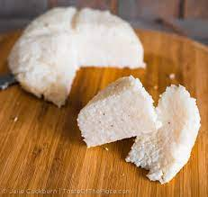

Ugali recipes

Ingredients and steps of cooking Ugali
Ingredients and tools
- Maize flour
- Water
- Cooking stick
- Sufuria
- Source of heat
- Placing place
- Cooking oil
Steps of cooking Ugali
- Place Sufuria on source of heat.
- Add water to the sufuria.
- Heat water to boiling point of about 100degrees celcius.
- Add cooking oil.
- Add atleast 2 cups of maize flour.
- Start stirring till a paste is formed.
- Continue adding flour till paste hardens.
- Start shapping to desired shape.
- Leave for approximately 10 minutes before turning.
- When ready overturn it onto a plate.
- Serve with desired Stew.Enjoy